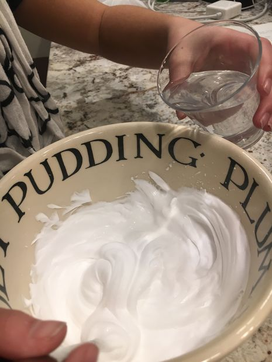

How to make Fluffy Slime
Materials:
- White Shirt (washed)
- Procion Dye
- Cups
- Liquid Glue
- Bowl
- Shaving Cream
- Spoons
- Food Coloring
- Add a spoonful of Borax into a glass cup and pour water into it.
- In a separate bowl, mix glue and Shaving Cream together until they create a frosting like mixture.
- Keep mixing this glue-cream mixture and gradually add the borax and water from the cup into the bowl. You will know when you are done when the mixture is not sticky anymore. 
- Knead this mixture until it all sticks together and has a more solid texture.
- Put in some food coloring and knead some more for the final slime to have the color you desire it to be. You now created fluffy slime of your desired color!
Designers: Revan Aleti, Aditya Tewary, Pranav Pitchala, Rishab Nathan
Contact: diysky@gmail.com
Theme: DIY | Metea Valley High School BPA | Aurora, Illinois | 2016-17